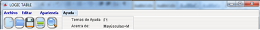

Ayuda ?

Para ejecutar la opción de ayuda basta con precionar F1, o sino:
* Click en Ayuda
* Se despliega un menú y presionamos Temas de Ayuda
Si presionamos Mayúsculas + M, se nos despliega una pantalla que nos muestra el nombre de los desarrolladores de esta herramienta informática.